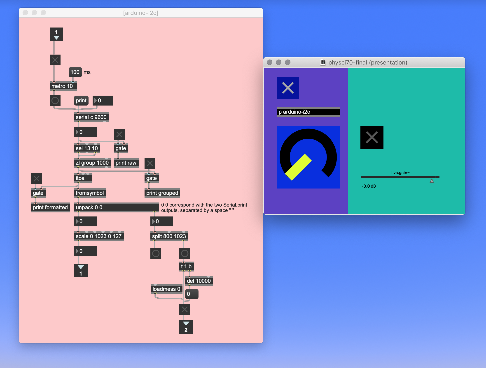

FINAL PROJECT
The motivation:
For the past few years, one of the obstacles I have found when working with live instruments and electronics is that, while good analog audio equipment, like an electric guitar pedal, for example, sounds great, its interface — the knobs, the switches — isn't ideal to be controlled live by instrumentalists playing chamber music, which often takes place in too quiet an environment for the on/off swtches on these pedals and keeps the musicians' hands too busy for them to be able to manipulate knobs with their hands while they perform.
Approximating these sounds digitally, though possible, requires much programming and a lot of CPU power when running. At the interface level, however, things that are widely available and often used in electroacoustic music, like MIDI pedals, offer readily available connectivity with music software and flexibility in functionality within this software. So, here is where my profect comes in...
I set about to develop an interface where MIDI pedals (the input) would control parameters that affect the sounds processed by analog electric guitar pedals (the output).
One main preoccupation is that I still needed to be able to take advantage of that flexibility afforded by MIDI pedals I mentioned above. In other words, the MIDI pedals' function cannot be limited to controlling one parameter on the guitar pedal; instead, the data needs to be available to be interpreted in more than one way.
The hardware:
1. A "control hub": 2 MIDI pedals (one regular foot pedal, one expression pedal) connected directly to an Arduino MEGA.
2. The Arduino communicates with an Adafruit 16-Channel 12-bit PWM/Servo Driver (PCA9685) through i2c as serial communication protocol. More info on the servo driver can be found here.


3. The servo driver controls a servo motor (scalable to up to 16 with the same setup) that moves one of the knobs on an EHX Canyon pedal, a delay pedal by Electro-Harmonix*.
* I am using this specific pedal just because it's one of the pedals I own, but the servo could have been attached to any continuous knob on any other pedal.
The software:
- Arduino IDE
- Max 8 (Max MSP)
Additional library: Adafruit_PWMServoDriver.h
THE CIRCUIT:
After attempts at doing this through SPI radio communication, WiFi or Bluetooth, and trying to transform the signal back to DC at the end of the chain to go directly into the effects pedal instead of mechanically moving the knob, this current setup seemed ideal for a couple of reasons:
I have limited the amount of microcontrollers to just one: the Arduino MEGA, in this case. With i2c and the Adafruit Servo Driver, I can scale this up to accommodate up to 16 servo motors (to control 16 different knobs) basically with the exact same setup, without the need to add more than the two SDA and SCL cables that are already in place between the Arduino (the "control hub") and the output. Similarly, at the input level, the MEGA gives me up to 16 analog ins; so, potentially, 16 different MIDI foot pedals could control those motors. In addition to this, up to 62 servo drivers of the same kind can be chained together, increasing the amount of servos that can be controlled — again, without any extra cables from the Arduino — to 992, which seems excessive right now, of course, but you never know...
Here are a few images of what the setup looks like in my room, i(messy)rl:
A messy early setup on my desk, but you can see most things together!
Desk cleaned up! The MEGA and TRS jack at the end of the MIDI expression pedal's cable. You can clearly see how tip, ring, sleeve go to breadboard and Arduino.
Here you can see the two MIDI pedals I am using on the floor.
And this is the output stage: SDA, SCL, and ground cables running to the Adafruit Servo Driver (getting power from the battery in our kit through the SAMD11 board for now). From there you can see the servo attached to the right-most knob on the Canyon pedal (held up with a pair of alligator clips on helping hands for now). The output of the pedal goes to the mixerm then to the speakers.
The code:
The Adafruit_PWMServoDriver library comes with an example code by Limor Fried/Ladyada for controlling servo motors that looks like this:
/***************************************************
This is an example for our Adafruit 16-channel PWM & Servo driver
Servo test - this will drive 8 servos, one after the other on the
first 8 pins of the PCA9685
Pick one up today in the adafruit shop!
------> http://www.adafruit.com/products/815
These drivers use I2C to communicate, 2 pins are required to
interface.
Adafruit invests time and resources providing this open source code,
please support Adafruit and open-source hardware by purchasing
products from Adafruit!
Written by Limor Fried/Ladyada for Adafruit Industries.
BSD license, all text above must be included in any redistribution
****************************************************/
#include <Wire.h>
#include <Adafruit_PWMServoDriver.h>
// called this way, it uses the default address 0x40
Adafruit_PWMServoDriver pwm = Adafruit_PWMServoDriver();
// you can also call it with a different address you want
//Adafruit_PWMServoDriver pwm = Adafruit_PWMServoDriver(0x41);
// you can also call it with a different address and I2C interface
//Adafruit_PWMServoDriver pwm = Adafruit_PWMServoDriver(0x40, Wire);
// Depending on your servo make, the pulse width min and max may vary, you
// want these to be as small/large as possible without hitting the hard stop
// for max range. You'll have to tweak them as necessary to match the servos you
// have!
#define SERVOMIN 150 // This is the 'minimum' pulse length count (out of 4096)
#define SERVOMAX 600 // This is the 'maximum' pulse length count (out of 4096)
#define USMIN 600 // This is the rounded 'minimum' microsecond length based on the minimum pulse of 150
#define USMAX 2400 // This is the rounded 'maximum' microsecond length based on the maximum pulse of 600
#define SERVO_FREQ 50 // Analog servos run at ~50 Hz updates
// our servo # counter
uint8_t servonum = 0;
void setup() {
Serial.begin(9600);
Serial.println("8 channel Servo test!");
pwm.begin();
// In theory the internal oscillator is 25MHz but it really isn't
// that precise. You can 'calibrate' by tweaking this number till
// you get the frequency you're expecting!
pwm.setOscillatorFrequency(27000000); // The int.osc. is closer to 27MHz
pwm.setPWMFreq(SERVO_FREQ); // Analog servos run at ~50 Hz updates
delay(10);
}
// You can use this function if you'd like to set the pulse length in seconds
// e.g. setServoPulse(0, 0.001) is a ~1 millisecond pulse width. It's not precise!
void setServoPulse(uint8_t n, double pulse) {
double pulselength;
pulselength = 1000000; // 1,000,000 us per second
pulselength /= SERVO_FREQ; // Analog servos run at ~60 Hz updates
Serial.print(pulselength); Serial.println(" us per period");
pulselength /= 4096; // 12 bits of resolution
Serial.print(pulselength); Serial.println(" us per bit");
pulse *= 1000000; // convert input seconds to us
pulse /= pulselength;
Serial.println(pulse);
pwm.setPWM(n, 0, pulse);
}
void loop() {
// Drive each servo one at a time using setPWM()
Serial.println(servonum);
for (uint16_t pulselen = SERVOMIN; pulselen < SERVOMAX; pulselen++) {
pwm.setPWM(servonum, 0, pulselen);
}
delay(500);
for (uint16_t pulselen = SERVOMAX; pulselen > SERVOMIN; pulselen--) {
pwm.setPWM(servonum, 0, pulselen);
}
delay(500);
// Drive each servo one at a time using writeMicroseconds(), it's not precise due to calculation rounding!
// The writeMicroseconds() function is used to mimic the Arduino Servo library writeMicroseconds() behavior.
for (uint16_t microsec = USMIN; microsec < USMAX; microsec++) {
pwm.writeMicroseconds(servonum, microsec);
}
delay(500);
for (uint16_t microsec = USMAX; microsec > USMIN; microsec--) {
pwm.writeMicroseconds(servonum, microsec);
}
delay(500);
servonum++;
if (servonum > 7) servonum = 0; // Testing the first 8 servo channels
}
I used a big chunk of that code for my project. Aside from a couple of different definitions for variables, I changed mostly just the loop part to do what I needed it to, and it ended up looking like this:
#include <Wire.h>
#include <Adafruit_PWMServoDriver.h>
// called this way, it uses the default address 0x40
Adafruit_PWMServoDriver pwm = Adafruit_PWMServoDriver();
// you can also call it with a different address you want
//Adafruit_PWMServoDriver pwm = Adafruit_PWMServoDriver(0x41);
// you can also call it with a different address and I2C interface
//Adafruit_PWMServoDriver pwm = Adafruit_PWMServoDriver(0x40, Wire);
// Depending on your servo make, the pulse width min and max may vary, you
// want these to be as small/large as possible without hitting the hard stop
// for max range. You'll have to tweak them as necessary to match the servos you
// have!
#define SERVOMIN 132 // This is the 'minimum' pulse length count (out of 4096)
#define SERVOMAX 540 // This is the 'maximum' pulse length count (out of 4096)
#define USMIN 600 // This is the rounded 'minimum' microsecond length based on the minimum pulse of 150
#define USMAX 2400 // This is the rounded 'maximum' microsecond length based on the maximum pulse of 600
#define SERVO_FREQ 50 // Analog servos run at ~50 Hz updates
// our servo # counter
uint8_t servonum = 0;
int midiPed = 0;
int midiTrig = 1;
int val;
int valTrig;
void setup() {
Serial.begin(9600);
Serial.println("8 channel Servo test!");
pwm.begin();
// In theory the internal oscillator is 25MHz but it really isn't
// that precise. You can 'calibrate' by tweaking this number till
// you get the frequency you're expecting!
pwm.setOscillatorFrequency(27000000); // The int.osc. is closer to 27MHz
pwm.setPWMFreq(SERVO_FREQ); // Analog servos run at ~50 Hz updates
delay(10);
}
// You can use this function if you'd like to set the pulse length in seconds
// e.g. setServoPulse(0, 0.001) is a ~1 millisecond pulse width. It's not precise!
void setServoPulse(uint8_t n, double pulse) {
double pulselength;
pulselength = 1000000; // 1,000,000 us per second
pulselength /= SERVO_FREQ; // Analog servos run at ~60 Hz updates
Serial.print(pulselength); Serial.println(" us per period");
pulselength /= 4096; // 12 bits of resolution
Serial.print(pulselength); Serial.println(" us per bit");
pulse *= 1000000; // convert input seconds to us
pulse /= pulselength;
Serial.println(pulse);
pwm.setPWM(n, 0, pulse);
}
void loop() {
val = analogRead(midiPed);
Serial.print(val);
val = map(val, 0, 1024, SERVOMIN, SERVOMAX);
pwm.setPWM(0, 0, val);
valTrig = analogRead(midiTrig);
Serial.print(" ");
Serial.print(valTrig);
Serial.println();
delay(10);
}
Once that was done, I then went to Max MSP and built this interface that is a little more user-friendly:

I asked Max to read data from the serial port transmitted by Arduino using the "serial" object. In this case, the MEGA was connected to port C.
If we look back at the loop section in the Arduino code, I am asking it to print two different serial readings, the "midiPed" value, which corresponds to the data from the MIDI expression pedal, and the "midiTrig" value, the MIDI foot pedal, used as a trigger. Separated by a space, Max then routes them to two different outputs using the "unpack" object. By scaling the incoming values from 0-1023 to 0-127, I'm simply turning them into MIDI numbers, which is based on the idea that there are 128 notes on a MIDI keyboard.
As I stated above, one of the goals of this project was to maintain the flexiblity afforded by MIDI data in a program like Max, so this does just that: once these values have been converted to MIDI numbers, the incoming data from the two MIDI pedals can be mapped to anything in the MIDI world of Max. In this particular case, I am simply turning the second pedal (the MIDI foot pedal) into a trigger, a sort of on/off switch that triggers a preloaded audio file.
If you have Max and are interested in the code, you can find it here. Or copy this text and paste it in a new Max window.
Please note that you have to close the serial monitor in the Arduino IDE in order for Max to be able to read the data.
THE THING at work:
Possible improvements:
Once some restrictions in place due to the pandemic start to end, I would like to get some 1/4" jacks and maybe mount them on a panel (housing 16?) so that the connectors from the MIDI pedals aren't as exposed as they are now.
It would also be nice to build some kind of mounting structure for the servos at the output end and get some solderable protoboards to consolidate a lot of the connections.
One thing that is actually kind of a problem right now is how loud the servo is. I mean, just the noise it makes from its moving gears is a little bit too loud for an environment where, like I said above, things sometimes need to be kept pretty quiet.
It wasn't possible for me to really test different servos and find a quieter model this time around, so again, once going to a store and testing different things is possible, or ordering parts online can be done more easily, this will be something for me to test.
Thanks, Rob, Victoria, and Nathan for all your help this semester and for making it possible for us to continue building things during lockdown despite the difficulties!